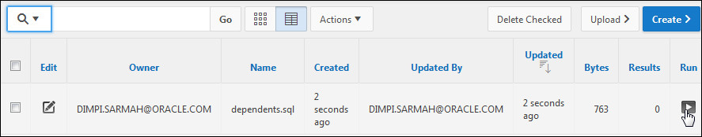

This tutorial shows you how to create a Data
Loading Wizard for your application so that end
users can add data into a table.
Time to Complete
Approximately 15 minutes
Introduction
Applications with data loading capability allow end
users to dynamically import data into a table within
any schema to which the user has access. To do this,
end users run a Data Load Wizard that uploads data
from a file or copies and pastes data entered by the
end user directly into the wizard.
With Oracle Application Express 5.0, you can create
a series of data load wizard pages in your
application using the new Data Loading page wizard.
The wizard allows you to add table lookups and
transformation rules that are executed when the Data
Load Wizard runs.
In this tutorial, you create a DEPENDENTS
table, create an application with a report, use the
Data Loading page wizard to create the Data Load
wizard pages in your application that the end user
uses to load the data. The Data Loading definition
contains a table lookup for the relative name and a
data transformation rule to make sure that Gender is
stored in uppercase.
Prerequisites
Before starting this tutorial, you should:
Have install Oracle Database 11g or
later.
Have install Oracle Application Express Release
5.0.
Download and unzip the files.zip
file into a working directory to use during this
tutorial.
Create a workspace and user to perform this
tutorial.
Create the DEPENDENTS table using a SQL Script
In this section, you upload a SQL Script and run it
to create the DEPENDENTS
table. Perform the following steps:
To log in to Oracle Application Express, enter
the following details, and click Sign In.
Workspace: <your workspace name>
Username: <your
username>
Password: <your
password>
Select SQL Workshop > SQL Scripts.
Click Upload >.
Click Browse.
Select dependents.sql
from the files you downloaded from the
prerequisites section of this tutorial and click
Open.
Click Upload.
Your script was uploaded successfully. click
the Run icon.

Click Run Now.
Your script ran, click the View Results
icon.
The script ran successfully. In the next
section you create an instant application and a
report region on the Home page.
Create an Application with a Report
In this section, you create an instant database
application and create an interactive report that
shows all the data in the DEPENDENTS
table. Perform the following steps:
Change the Name to Data Loading and
click Create Application.
Click Create Application.
Your application was created successfully. You
want to create a report region on the Home page.
Select the Home page icon.
Right-click Regions and select Create
Region.
Enter Dependents List for Title and
select Interactive Report for Type.
Enter the following SQL SELECT
statement and click Save and Run Page. select FIRST_NAME,
LAST_NAME,
BIRTHDATE,
RELATION,
GENDER,
RELATIVE_ID
from DEPENDENTS
Login as a valid user and click Login.
The Home page displays the report. The reason
you see the “No data found” message is because
the table is currently empty. In the next
section, you use the Data Loading Page wizard to
create a Data Load wizard. You will then use the
Data Load wizard to load data into the DEPENDENTS
table. After the data is loaded into the table,
this report will display the loaded data. Click
the Application link in the developer toolbar.
Creating a Data Load Wizard Using the Data Loading
Page Wizard
In this section, you use the Data Loading page
wizard to create four pages in your application that
an end user will run to load data into the DEPENDENTS
table. Perform the following steps:
Click Create Page >.
For Page type, click the Data Loading icon.
You need to specify the table you want to load
data into and what columns uniquely identify the
dependent in the table. In this case, the
concatenation of FIRST_NAME
and LAST_NAME
uniquely identify a Dependent in the DEPENDENTS
table. Specify and/or select the following and
click Next>.
Data Load Definition Name
Load Dependents
Table Names
DEPENDENTS
Unique Column 1
FIRST_NAME (Varchar2)
Unique Column 1
LAST_NAME (Varchar2)
You want to create a transformation rule to
make sure that when the data is stored, the data
for the GENDER
column is stored in Upper Case. Specify and/or
select the following and click Add.
Column Name
Gender
Name
Uppercase Gender
Type
To Upper Case
The transformation was created. Click Next
>.
You want to add a lookup for this data load. In
this case, the relative_id should correspond to
the id of the EMP
table so that it is a valid employee of this
dependent. Specify and/or select the following
and click Add.
Column Name
RELATIVE_ID
Table Name
EMP
Column Name(of key value)
EMPNO
Uploaded Column
ENAME
The lookup for RELATIVE_ID
was created, click Next >.
The four pages in the screenshot will be
created as a result of this Data Load. Click Next
>.
For navigation preference, select Identify
an existing navigation menu entrE for this
page option. Select Homefor Existing
Navigation Menu Entry Click Next >.
You want to branch to the Home page if the
user selects the Cancel or Finish buttons. Enter
1 for both Branch to Page fields and
click Next >.
Click Create to create the wizard pages
for the data load. In the next section, you test
the Data Load Wizard pages that were created.
Testing Your Data Load Wizard
In this section, you test your data load wizard
pages by loading some data. Perform the following
steps:
Click Save and Run Page.
Enter your login information and click Login.
You want to load the data using a tab delimited
file. Click the Upload file option for
Import From.
Click Browse.
Select the dependent_data1.txt file
and click Open.
Click Next >.
Notice that there are some values for the
GENDER column that are lower case and that the
values for RELATIVE_ID are the employee name
that the dependent is a relative of. When you
click Next, the Lookup and Transformation Rules
will be applied. Click Next>.
Notice now that all the values for GENDER are
uppercase and the EMPNO of the relative is
applied for each ENAME that if found in the EMP
table. Notice that there are two names it did
not find so an error will be generated when the
Load takes place. Click Load Data.
Notice that 9 rows were inserted and the 2 rows
for the lookup that were not found failed. Click
Finish.
The Home page is now displayed and the report
contains the data that you just loaded.
This time you want to use the Copy and Paste
option instead of uploading a file. Click Copy
and Paste.
Open the dependent_data2.txt file and
copy the entire contents of the file to your
clipboard (ctrl+c).
Paste the contents into the Copy and Paste
Delimited Data area, make sure the First Row has
Column Names is still checked and click Next
>. Note that the third column name is
set to BIRTHDAY
instead of the column name in the DEPENDENTS
table which is BIRTHDATE.
Because the column name did not match, you
need to select the column name from the list.
Select BIRTHDATE
from the list for the third column.
Click Next to apply the lookup and
transformation rule.
Notice the values for GENDER
are in uppercase and all the EMPNO
values were found in the
EMP table. All the data will be
inserted and one row will be updated because it
had the same FIRST_NAME
and LAST_NAME
as the previous load. Click Load Data.
The data load results are displayed. Click
Finish to return to the Home page.
The report is updated with the additional and
revised data. In the next section, you review
the data load definition. Click the Application
link in the developer toolbar.
Review the Data Load Definition
In this section, you review the Data Load
definition so that if desired, you can make changes.
Perform the following steps:
Notice that four Data Load pages were created
in your application. To see the Data Load
definition for these pages, Click Shared
Components.
Under Data References, click Data Load
Definitions.
Click the Load Dependents definition.
The definition is displayed. Note that you can
create or modify any existing Table Lookups or
Transformation Rules from this page.
Want to Learn More?
In this tutorial, you learned to:
Create a Data Loading wizard
Test your Data Loading wizard by loading data
into a table